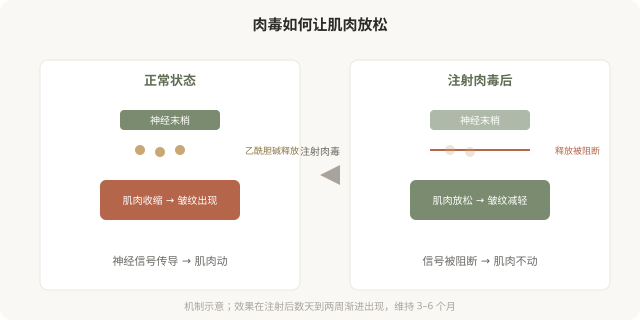
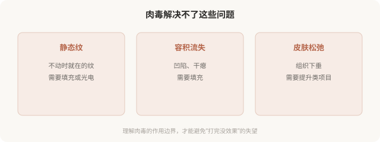

先说结论：肉毒杆菌素（俗称“肉毒”）通过阻断神经肌肉接头处的乙酰胆碱释放，让过度活跃的肌肉放松。它解决的是“肌肉”问题，因表情肌反复收缩形成的动态纹（抬头纹、鱼尾纹）、因肌肉肥大形成的轮廓（咬肌肥厚）。它不是填充，不补容积；效果在注射后数天到两周渐进出现，维持数月后会自行代谢消退。把它理解成“除皱万能药”或“瘦脸针”都是片面的。
肉毒是怎么起作用的

神经通过释放乙酰胆碱“指令”肌肉收缩。肉毒杆菌素切断了这个指令的传递，它阻止乙酰胆碱的释放，肌肉因此接收不到收缩信号，进入放松状态。因为肌肉不再反复收缩，因收缩产生的动态纹就减轻了；因为肌肉放松、体积可能略有缩小，肌肉型轮廓（如咬肌）也会改善。
这个机制解释了肉毒的几个特性：
- 效果不是即刻的：神经肌肉接头的阻断需要时间建立，通常 3–14 天渐进起效。
- 维持有限：身体会逐渐建立新的神经肌肉接头，肉毒效果在 3–6 个月后消退。
- 只对“肌肉”问题有效：静态纹（不动时就在的纹）、容积流失、皮肤松弛，肉毒解决不了。
- 可逆：效果自行消退，不需要溶解，这也是它的安全特性之一。
肉毒主要解决两类问题
动态纹：因表情肌反复收缩形成的纹路。
- 抬头纹：抬眉时出现的横纹。
- 皱眉纹：皱眉时眉间的竖纹（川字纹）。
- 鱼尾纹：笑时眼角的放射状纹。
- 鼻背纹：皱鼻时鼻根的横纹。
肌肉型轮廓：
- 咬肌肥厚：咬牙时耳前下方鼓起的肌肉块，使下面部显宽。
- 部分情况下用于改善微笑露龈、调整眉形等。
肉毒不解决什么

几个关键认知
- 肉毒不是填充：它不补容积、不塑形轮廓（除了肌肉型）。
- 效果可逆：维持 3–6 个月，之后肌肉功能恢复。
- 个体差异大：起效速度、维持时间、剂量反应因人而异。
- 反复注射不会“上瘾”：效果消退后肌肉恢复，需要再次注射维持，这是机制决定的，不是依赖。
- 正规产品是安全的：美容剂量远低于中毒剂量，但前提是正规产品、正规医生、合适剂量。
肉毒的安全性边界
美容剂量的肉毒杆菌素，在正规产品、正规操作下安全性较高。但仍需注意：
- 过敏反应：罕见但可能。
- 局部不良反应：疼痛、淤青、短暂头痛（额部注射后）。
- 效果不达或过度：剂量不足无效，过量僵硬。
- 扩散到非目标肌肉：如眼周扩散致眼睑下垂、复视，通常是暂时性的。
- 不对称：左右剂量或位置差异。
- 抗体形成：反复注射极少数人可能产生中和抗体，导致效果减退。
“肉毒”这个词本身容易引发“毒素”的恐惧，但美容使用的剂量是经过严格稀释和控制的。真正的风险来自非正规产品、非正规操作者和不当剂量，而非“毒素”本身。
决策前的认知
理解肉毒的核心是：它是一种针对肌肉的、可逆的、需要反复维持的治疗。它对动态纹和肌肉型轮廓有效，对静态纹、容积、松弛无效。把它用在合适的问题上，效果好且安全；用在不适合的问题上，要么无效要么过度。
本文用于健康教育，不能替代面诊和个体化评估；肉毒注射须使用正规产品，在正规医疗机构由具备资质的医师开展。